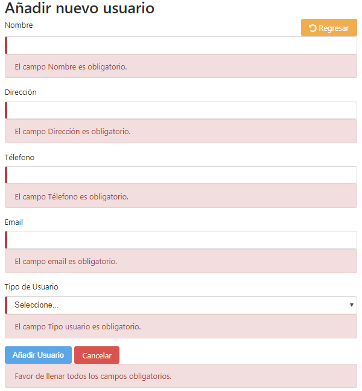

Nota: Si después de haber leído este manual, sientes que no ha quedado del todo claro, no dudes a acercarte a un administrador para que puedas recibir el apoyo necesario para resolver la situación.
En esta sección de Ayuda, podrás encontrar un manual que explicará el contenido de CelulaApp. Con la finalidad de resolver las dudas que pudieran existir, podrás acceder a este apartado para documentarte y resolver posibles conflictos que tengas con el entorno de la aplicación.
Este es un sistema de autentificación de inicio de sesión. Una vez que estemos dentro de este apartado, lo que tenemos que hacer es introducir un correo electrónico y contraseña.
Correo Electrónico (Flecha roja): En este campo debemos introducir un correo valido, que cumpla con nombre y dominio, por ejemplo “ejemplo@ejemplo.com”.
Contraseña (Flecha azul): En este campo debemos introducir la contraseña que se nos tomó, para realizar el registro. Esta tiene que estar validada con: un al menos un número, una mayúscula y una minúscula, además de contar con una longitud de 10 caracteres, por ejemplo “Ejemplo10”.
Inicie Sesión: (Flecha verde): En caso de que nos haya faltado alguno de los datos anteriores, o no se encuentren validados, el botón no se activara. Una vez ingresados los datos, procederemos a solicitar acceso al sistema. Si el sistema nos autentifica, podremos acceder. Cuando introduzcamos algún dato equivocado, nos aparecerá un mensaje diciéndonos que algunos de los datos se encuentran mal y debemos intentar de nuevo.
En el apartado de Inicio, podremos ver que contamos con una barra de navegación, con distintos componentes, tales como Inicio, Usuarios, Células, Reportes, Informes, Ayuda, así como un “CelulaApp” y un botón de Cerrar Sesión. Para acceder a los módulos existentes en el sistema, podemos hacerlo desde la barra de navegación o bien, por medio de los botones que se muestran en pantalla.
Si queremos entrar a ver los usuarios, agregar usuarios, borrar, editar (solo, si eres administrador), podemos hacerlo desde el apartado de la barra de navegación (superior) o podemos dar clic al botón de color naranja.
Si queremos entrar a ver las células activas, agregar células, borrar, editar (solo, y solo si eres administrador), podemos hacerlo desde el apartado de la barra de navegación (superior) o podemos hacer clic al botón de color rojo.
Si queremos entrar a ver los reportes, agregar reportes, podemos hacerlo desde el aparado de la barra de navegación (superior) o podemos hacer clic al botón de color azul.
Si queremos entrar a ver los informes y subir nuestros informes, lo podemos hacer desde el apartado de la barra de navegación (superior) o podemos hacer clic al botón de color verde.
Si queremos es ayuda, resolver nuestras dudas o algún detalle no ha quedado claro. Antes de ir a pedir ayuda con un administrador o supervisor, te invito a acceder desde la barra de navegación (superior) o desde el botón de color café.
Una vez que hayamos terminado de realizar nuestras actividades, deberemos CERRAR SESIÓN, desde el botón de color rojo que está en la parte superior que dice “Cerrar Sesión”.
En el apartado de usuarios podremos ver los usuarios que están registrados en el sistema. Al mismo tiempo este módulo funciona como una especie de directorio, donde los hermanos activos en la red de células (y no activos), se les puede registrar en la base de datos, eso sin darlos de alta.
Por otra parte, podremos buscar a los hermanos por su nombre, tal y como se agregó en el momento de registro. En caso de no recordar cómo se guardó el campo Nombre, el sistema nos dará a conocer las posibles coincidencias.
Si necesitamos editar a algún usuario, lo podremos hacer pulsando en el botón verde de cada usuario registrado.
Al pulsar el botón, nos dirigirá al formulario de Añadir Usuario, pero con los campos prellenados, para solo modificar lo que necesitemos para al finalizar y pulsar el botón de Guarda cambios.
En caso de no existir, nos dará un mensaje con una leyenda de que no se han encontrado coincidencias.
Solo deberán estar dadas de alta, las personas que están involucradas en el llenado de los informes de célula.
Si queremos dar alta a un usuario, tendremos que conocer el Nombre, Dirección, Teléfono, Email, así como una contraseña que cumpla con los criterios de validación de ‘al menos una mayúscula, minúscula, un número y una longitud de 10 caracteres’. Solamente si hemos llenado todos los campos del formulario, podremos Añadir Usuario, en caso de que nos falte algún dato, el botón permanecerá desactivado. Si nos brincamos algún dato, estará desactivado. La única manera de poder agregar es llenando todos los datos del formulario.
Una vez que pulsemos en Añadir Usuario, el sistema nos felicitará y nos mostrar un mensaje diciéndonos que nos dirigirá a confirmar el correo y establecer la contraseña.
Si pulsamos en Aceptar, al usuario nos pedirá confirmemos el correo electrónico que creemos una contraseña.
Una vez que hayamos terminado de realizar nuestras actividades, deberemos CERRAR SESIÓN, desde el botón de color rojo que está en la parte superior que dice “Cerrar Sesión”.